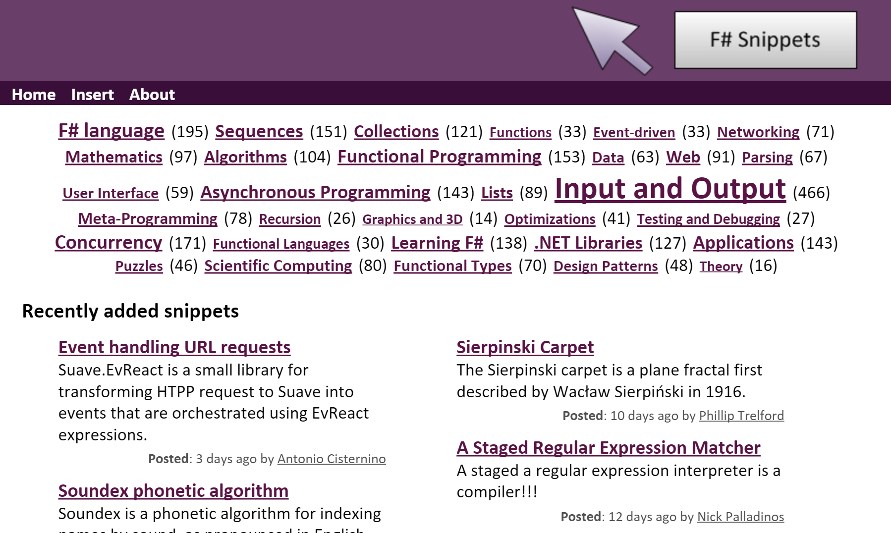
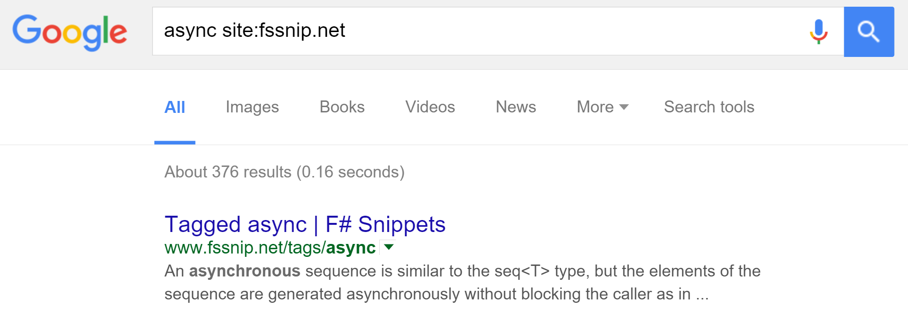
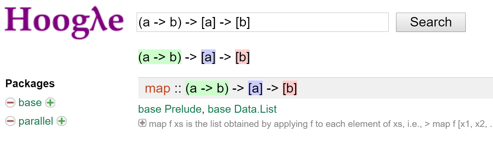
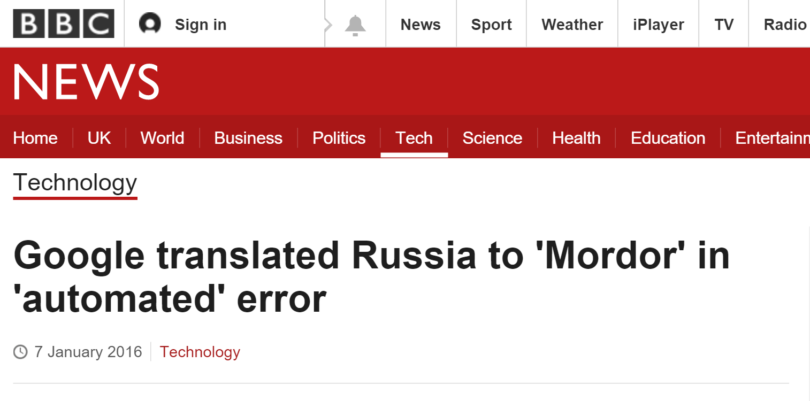
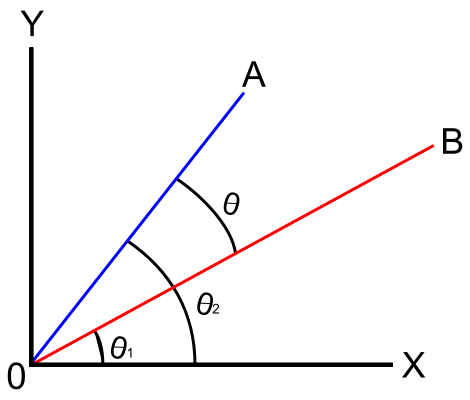
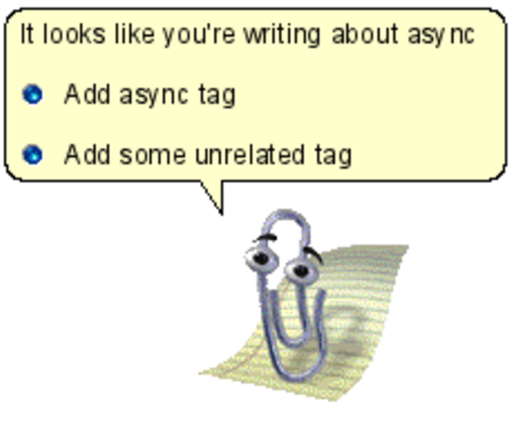
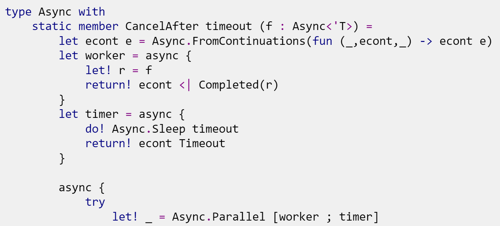
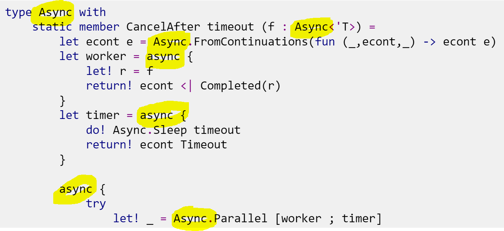

Full name: index.amazingFunction
Full name: Microsoft.FSharp.Core.ExtraTopLevelOperators.async

Spice up your website
with Machine Learning!
Evelina Gabasova
F# Snippets
F# Snippets
Searching through F# snippets
over 1600 snippets
over 1100 different tags
Searching through F# snippets

Why we need a custom system
1: 2: 3: 4: |
|

Great opportunity to create a custom machine learning system!

Nguyen A et al.: Deep Neural Networks are Easily Fooled: High Confidence Predictions for Unrecognizable Images. 2015.
Using machine learning in production
- dependence on training data
- unpredictable black-box
Finding related snippets
If you liked this F# code, you'll also like ...
Simple information retrieval
common terms
Bag of words
- ignore order of words
separate text and code
Term frequency
Snippet 1
|
Snippet 2
|
Inverse document frequency
Relative importance of terms
\[idf(\text{term}) = \log \frac{\text{number of snippets}}{\text{number of snippets with term}} \]
Vector representation: TF-IDF
Term frequency - inverse document frequency
\[tfidf(\text{term}, \text{snippet}) = tf(\text{term}, \text{snippet}) \times idf(\text{term})\]
Vector representation of snippets

Demo
Suggesting tags
Suggesting tags

Making sense of user-generated tags
async, #async, async mailprocessor, async paraller, Async sequences, asyncseq, asynchronous, Asynchronous Processing, Asynchronous Programming, asynchronous sequence, asynchronous workflows
Edit distance
regex vs. regexp
sports vs. ports
pi vs. API
Machine learning
From snippets to tags
Naive Bayes

Why do you call me naive?
Why naive?
string and parser
async and MailboxProcessor
sequence and exception
Building a predictor

Building a predictor

Tag probabilities
Bayes theorem
\[p(\text{tag} \mid \text{snippet}) \propto p(\text{tag}) \prod_{\text{term}} p(\text{term} \mid \text{tag})\]
1. Prior probabilities
\[p(\text{tag}) \approx \frac{\text{Number of snippets with the tag}}{\text{Number of snippets}}\]
2. Tag likelihood
How frequent is the term among snippets that have the tag ?
\[p(\text{term} \mid \text{tag}) = \frac{\text{Number of snippets with the term and tag}}{\text{Number of snippets with the tag}}\]
Naive Bayes prediction
\[p(\text{tag} \mid \text{snippet}) \propto p(\text{tag}) \prod_{\text{term}} p(\text{term} \mid \text{tag})\]
\[\frac{p(\text{tag} \mid \text{snippet})}{p(\neg\text{tag} \mid \text{snippet})} > 1 ?\]
The theory is always nicer
What if there is no snippet tagged async that contains List?
Demo
Summary
- Domain representation
- What are important features
- Machine learning is fun!
Contribute to F# snippets website
Learning more
F# snippets fssnip.net
The F# Foundation www.fsharp.org
FsLab Package www.fslab.org
Introduction to information retrieval informationretrieval.org
Thank you!
 |
@evelgab |
 |
github.com/evelinag |
| evelinag.com |